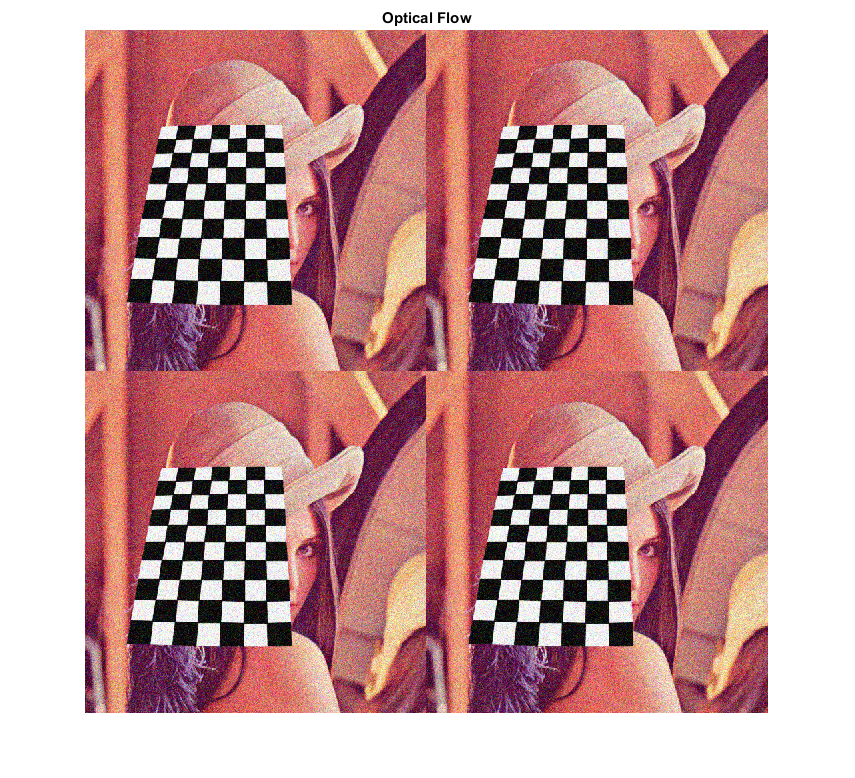
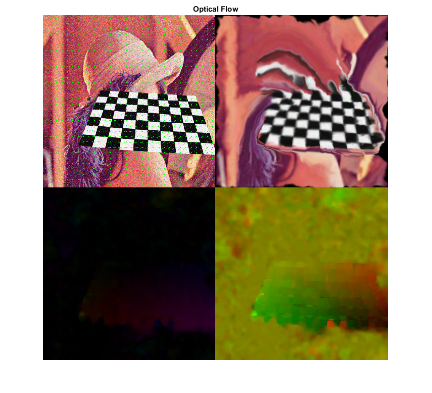

Contents
Dense Optical Flow
Demo shows how to compute the optical flow for all the points in the frame using cv.calcOpticalFlowFarneback.
OpenCV provides an algorithm to find the dense optical flow. It is based on Gunner Farneback's algorithm which is explained in "Two-Frame Motion Estimation Based on Polynomial Expansion" by Gunner Farneback in 2003.
Sources:
function opt_flow_demo() % Prepare video source if true vid = 0; elseif mexopencv.require('vision') vid = fullfile(toolboxdir('vision'), 'visiondata', 'visiontraffic.avi'); %cap.PosFrames = 80; % skip first few seconds with no motion else vid = fullfile(mexopencv.root(), 'test', '768x576.avi'); end cap = createVideoCapture([], 'chess'); assert(cap.isOpened(), 'Could not initialize capturing'); % Grab first frame frame = cap.read(); assert(~isempty(frame), 'Failed to read frame'); prev = cv.cvtColor(frame, 'RGB2GRAY'); outGlitch = []; % Plot hImg = imshow(repmat(frame, [2 2])); title('Optical Flow') % Main loop while ishghandle(hImg) % Grab next frame frame = cap.read(); if isempty(frame), break; end next = cv.cvtColor(frame, 'RGB2GRAY'); if isempty(outGlitch), outGlitch = frame; end % Calculate dense optical flow flow = cv.calcOpticalFlowFarneback(prev, next, ... 'Levels',3, 'WinSize',15, 'Iterations',3, 'PolySigma',1.2); % Visualize optical flow outField = draw_vector_field(frame, flow); outGlitch = warp_flow(outGlitch, flow); outFlow1 = draw_flow_hsv(flow); outFlow2 = draw_flow_rgb(flow); % Display concatenated results set(hImg, 'CData',[outField, outGlitch; outFlow1, outFlow2]); drawnow; % Next iteration prev = next; end cap.release(); end
Warning: Image is too big to fit on screen; displaying at 67%
Helper functions
function img = draw_vector_field(img, flow, step, clr) %DRAW_FLOW Vector field flow visualization if nargin < 3, step = 2^4; end if nargin < 4, clr = [0 255 0]; end % vector field grid sz = size(flow); if true xstep = step/2:step:sz(2); ystep = step/2:step:sz(1); else xstep = round(linspace(1, sz(2), 40)); ystep = round(linspace(1, sz(1), 40)); end [X,Y] = meshgrid(xstep, ystep); % draw arrows (velocity vectors) %TODO: cv.arrowedLine if true % vectorized implementation XY = [X(:) Y(:)]; UV = reshape(permute(flow(ystep,xstep,:), [3 1 2]), 2, []).'; img = cv.circle(img, XY, 1, 'Color',clr, 'Thickness','Filled'); img = cv.line(img, XY, round(XY+UV), 'Color',clr); else % double-loops, much slower for x=xstep for y=ystep xy = [x y]; uv = [flow(y,x,1) flow(y,x,2)]; img = cv.circle(img, xy, 1, 'Color',clr, 'Thickness','Filled'); img = cv.line(img, xy, round(xy+uv), 'Color',clr); end end end end function img = draw_flow_hsv(flow) %DRAW_FLOW_HSV Flow visualization using HSV colorspace % map its direction to Hue value, and its magnitude to Value plane [ang, mag] = cart2pol(flow(:,:,1), flow(:,:,2)); % ang in [-pi,pi] if mexopencv.isOctave() %HACK: RAD2DEG not implemented in Octave ang = (ang + pi) * (180 / pi); else ang = rad2deg(ang + pi); end % create HSV image for flow visualization % (8-bit: 0 <= H <= 360/2, 0 <= S,V <= 255) img = zeros([size(flow,1) size(flow,2) 3], 'uint8'); img(:,:,1) = ang / 2; img(:,:,2) = 255; if true img(:,:,3) = min(mag*4, 255); else img(:,:,3) = cv.normalize(mag, ... 'NormType','MinMax', 'Alpha',0, 'Beta',255); end % convert to RGB image img = cv.cvtColor(img, 'HSV2RGB'); end function img = draw_flow_hsv_(flow) %DRAW_FLOW_HSV_ Flow visualization using HSV colorspace [mag, ang] = cv.cartToPolar(flow(:,:,1), -flow(:,:,2), 'Degrees',true); mag = cv.normalize(mag, 'Alpha',0, 'Beta',1, 'NormType','MinMax'); hsv = cat(3, ang, mag); hsv(:,:,3) = 1; img = cv.cvtColor(hsv, 'HSV2RGB'); img = uint8(255 * img); end function img = draw_flow_rgb(flow) %DRAW_FLOW_RGB Flow visualization using RGB colorspace dMax = max(abs(flow(:))); % max displacement img = bsxfun(@times, flow, cat(3,1,-1)); % U, -V img = (img - (-dMax)) / (dMax - (-dMax)); % map values img(:,:,3) = 0; img = uint8(255 * img); end function img = warp_flow(img, flow) %WARP_FLOW Flow glitch flow = -flow; flow(:,:,1) = bsxfun(@plus, flow(:,:,1), 0:size(flow,2)-1); flow(:,:,2) = bsxfun(@plus, flow(:,:,2), (0:size(flow,1)-1).'); img = cv.remap(img, flow, 'Interpolation','Area'); end